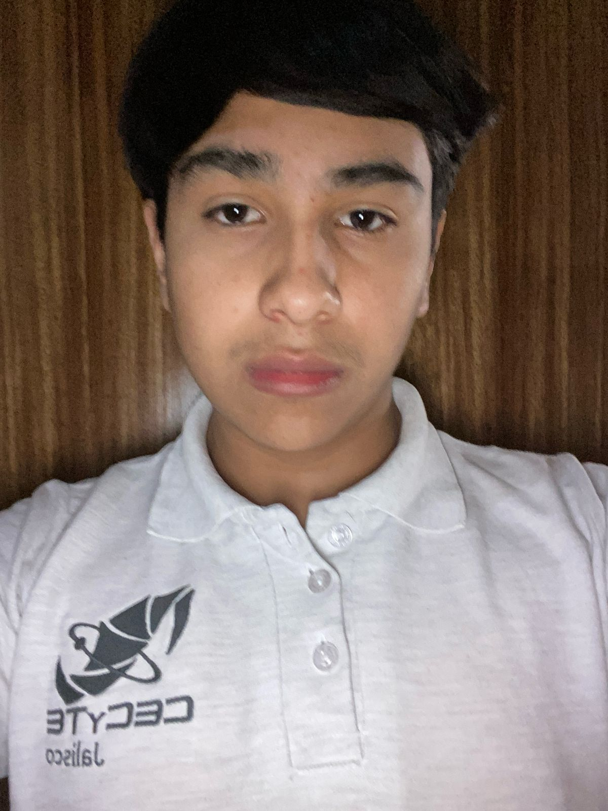

CURRICULUM VITAE
José Luis Martínez Enciso
Dirección: Plaza de los Constituyentes
Email: 230402429@cecytejalisco.edu.mx
Teléfono: +52 33 1672 0517
Escolaridad
| ESCOLARIDAD: | ESCUELA: | AÑOS: |
|---|---|---|
| Preescolar | Colegio Sor Juana Ines de la Cruz | 4-6 |
| Primaria | Colegio Sor Juana Ines de la Cruz | 6-12 |
| Secundaria | Colegio Hidalgo | 12-15 |
| Bachillerato | Colegio De Estudios Cientificos Y Tecnologicos Del Estado De Jalisco | 15-18 |
| Universidad | Intituto Tecnologico de Monterrey | 18-24 |
Habilidades Y Conocimientos
Habilidades
Creatividad – Generar ideas innovadoras y resolver problemas de forma original.
Trabajo en equipo – Colaborar con otros para alcanzar objetivos comunes.
Resolución de problemas – Encontrar soluciones a situaciones difíciles.
Gestión del tiempo – Organizar tareas y cumplir plazos eficientemente.
Conocimientos
Matemáticas básicas – Operaciones y conceptos fundamentales.
Nutrición – Propiedades de los alimentos y su impacto en la salud.
Gramática y ortografía – Reglas del lenguaje para una correcta escritura.
Primeros auxilios – Procedimientos básicos en emergencias médicas.